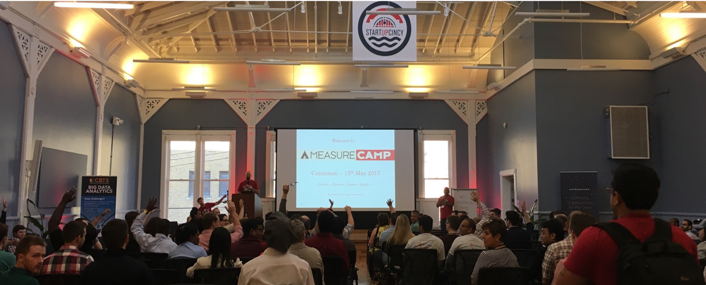
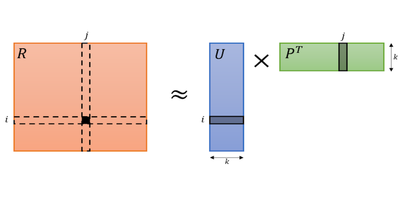

MeasureCamp Cincinnati 2019

- When: April 27th 2019
- Where: 8451
- Who: You!
Overview
- Search: typical approaches and problems
- Recommenders: typical approaches and overview
- Bring search and recommendations together
- A few approaches leveraging elastic search
Search
- Search is the process of ranking content based on a query.
- We are filtering content
- We need good search to:
- Increase engagement
- Address information overload
- Improving discoverability - Unaware of existence or new Content
Typical problems with Search
- A typical search in your document repository is poor
- Out of the box solutions don't consider the whole context available
- Typically uses an inverted index
- A ranking scheme
Enhancing search
- So how can we do better?
- Why is google so good?
- Crowd sources relevence
- We need and often have additional context
Enhancing search
- Simplest approach is boosting
- There are other ways: word2vec
- Word2vec can crowd source via past search history and get additional context
Recommendation Engines
- What does recommendation have to do with search
- Recommenders filter information based on user’s preferences, interest, or observed behavior about item
- We can think of it as a mechanism to improve relevance
Recommendation Engines
- Two main types of recommendation systems
- Content based filtering
- Collaborative filtering
Content Based filtering
- Recommends items based on a similiarty of the items features and user profile features.
- Each item is represented as a set of terms.
- The user profile is represented with the same terms.
- Items that are most related to profile are recommended to the user
- This similarity can be derived by TF/IDF
Representing Content based in ElasticSearch
- Since it can leverage term similarity we can use the elastic search indexes
- Represent the item(movie/show) as ES document
- Features are stored in separate fields
- User becomes the query
- Reference : Recommendation through elastic search lens
Collaborative filtering
- Recommends items based on a similiarty of the item's ratings from other users.
- Premise: users who agreed in their ratings of items in the
past will do so in the future
- Neighborhood Based approaches:
- User-Based approach: group similar users.
- Item-Based approach: group similar items and recommend.
- Or Matrix Factorization is an approach(ALS).
ALS - Alternating Least Squares

- Rij is a rating matrix of Users to Products
- We have a sparse matrix with some cells filled
- The solution predicts missing cells
- It's is decomposed into Uik users with k factors and Pkj products on k factors
- ALS fixes U and predicts P , fixes P and Predicts U
Representing Collaborative filter model in ElasticSearch
- Feature selection in text classification can be applied to item as a document model
- Directly store like items in fields - Recommendations for search (trivial approach)
- Or store the feature vectors in elastic search
- You can use something like Apache Mahout elastictaste plugin
Elastic Search representations
- Docker-compose for elasticStack
- Jupyter Notebook
- Search for recommenSignificant Terms Aggregation
- Directly storing like items
Summary
- Search is recommendation and recommendation is Search
- Think of context to exploit the problem space
- We looked at collaborative and content based filtering approaches
- A combination of strategies will be needed to fine tune and deliver a performant search
References:
- Relevent Search By Doug Turnbull, John Berryman
- https://opensourceconnections.com/blog/2015/10/16/bm25-the-next-generation-of-lucene-relevation/
- https://www.slideshare.net/vozniuk/multiple-ways-of-building-a-recommender-system-with-elasticsearch-elastic-meetup-switzerland-andrii-vozniuk
- https://opensourceconnections.com/blog/2016/09/09/better-recsys-elasticsearch/
- http://www.cond.org/p50-pitkow.pdf
- https://en.wikipedia.org/wiki/Cold_start_(computing)
- https://www.math.uci.edu/icamp/courses/math77b/lecture_12w/pdfs/Chapter%2002%20-%20Collaborative%20recommendation.pdf
- http://www.cs.rochester.edu/twiki/pub/Main/HarpSeminar/Factorization_Meets_the_Neighborhood-_a_Multifaceted_Collaborative_Filtering_Model.pdf
- https://www.elastic.co/blog/looking-at-content-recommendation-through-a-search-lens
- https://www.microsoft.com/en-us/research/wp-content/uploads/2016/04/pp1291-Nalisnick.pdf
- https://github.com/codelibs/elasticsearch-taste